Practical Considerations
CAS Deep Learning - Computer Vision (Part1)
Institute for Data Science I4DS, FHNW
Overview
- A Recipe
- Data
- Baselines
- Overfit
- Regularization
- Tuning
- Squeeze
A Recipe
Leaky Abstraction
Silent Failure
Training neural networks fails silently!
1 - Data
1) Get to Know the Data
Thoroughly inspect the data!
Camera Traps: Errors
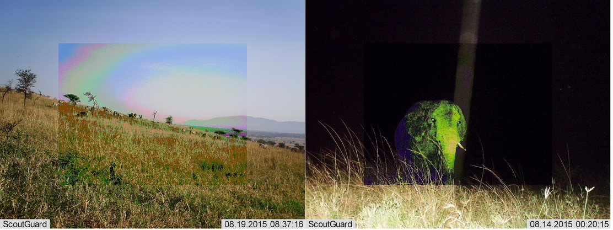
Camera Traps: Difficulties
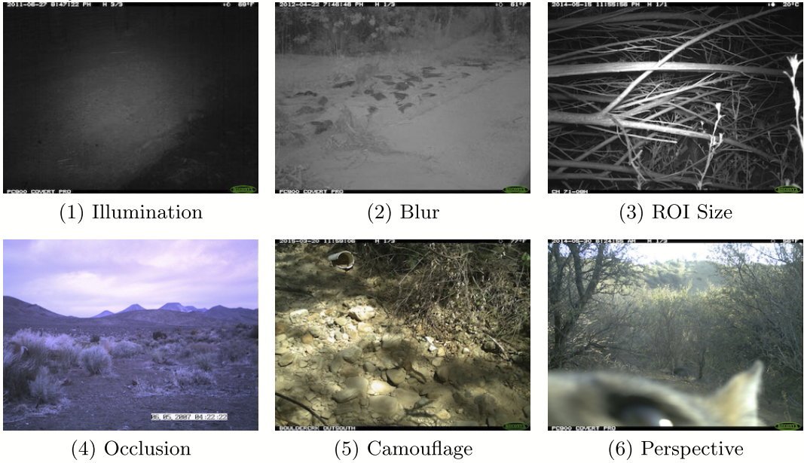
Rare Classes
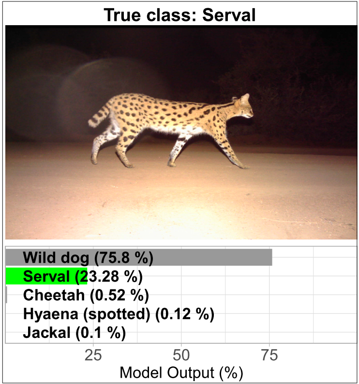
Multiple Classes
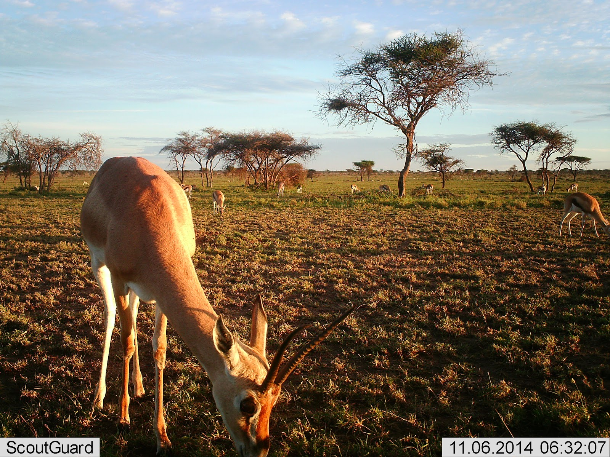Examples of an image from a camera trap with different species.
2 - Baselines
2) Baselines
Evaluation pipeline, metrics, experiment tracking, and baseline model.
ML Process
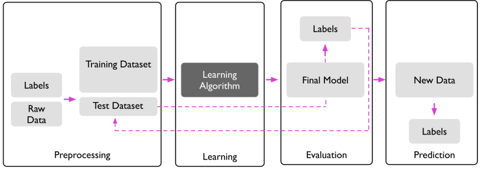
Experiment Tracking
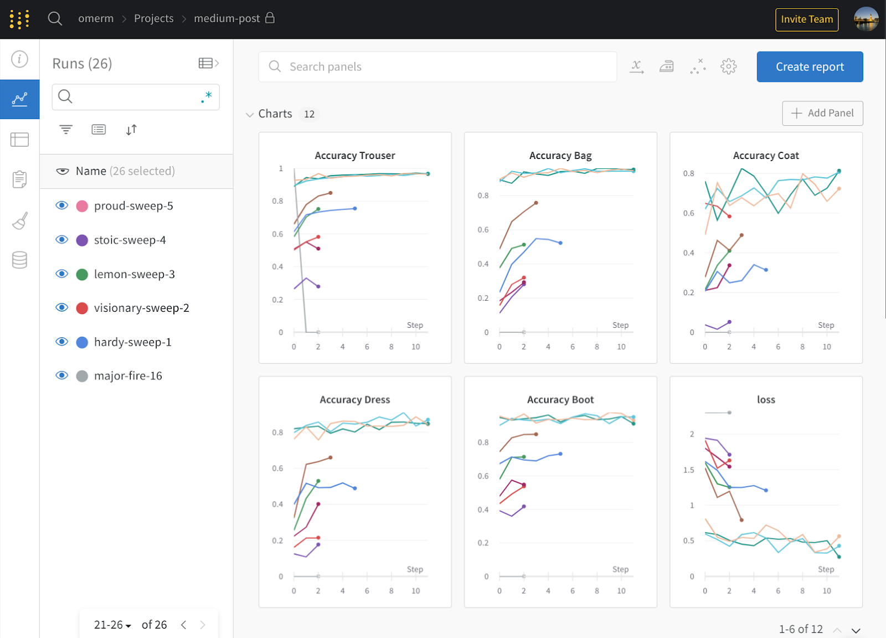
2) Baselines
Ensure reproducibility.
2) Baselines
Avoid unnecessary techniques and complexities. Reduce error susceptibility.
2) Baselines
If possible, use a human baseline. How good can the model be?
Difficult Cases

An image from a camera trap that is difficult to classify. Here, annotators had a 96.6% agreement with experts.
2) Baselines
Train an input-independent baseline. Is the model learning anything at all?
2) Baselines
Overfit the model on a batch of data. Does the optimization work?
2) Baselines
Visualize what goes into the model. Is my preprocessing working?
Fixed Sample: Segmentation Example

3 - Overfit
3) Overfit
At this point, you should have a good understanding of the dataset, high confidence in the evaluation pipeline, and initial baselines from simple models. Now, look for a model that performs well on the training set.
3) Overfit
Look for a good model architecture. Follow the principle “Don’t be a hero”. Prefer already implemented/established architectures.
4 - Regularization
4) Regularization
At this point, you should have achieved good performance on the training set. Now, focus on the validation set.
4) Regularization
The simplest measure to achieve better performance (and also reduce overfitting) is to collect more training data. However, this is often expensive!
Learning Curve
Is it worth collecting more data?
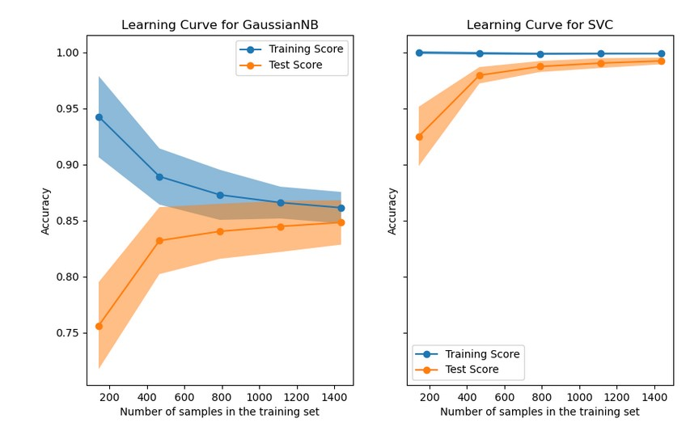Example of a learning curve. X-axis: Performance, Y-axis: Number of training samples. Left panel with Gaussian Naive Bayes and right panel with Support Vector Classifier.
4) Regularization
Another possibility is data augmentation. New data points are generated from existing ones by making random changes to the data. Typically, data points are augmented on-the-fly.
Data Augmentation: Augly
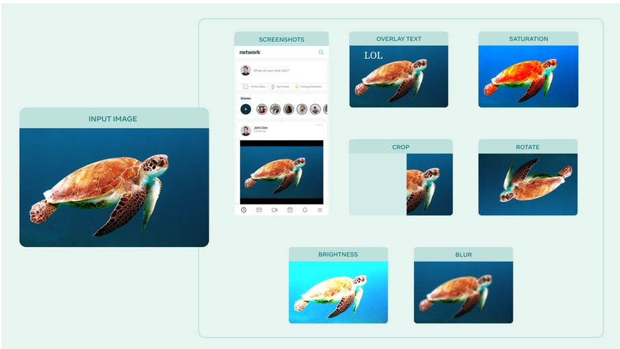
Data Augmentation: Albumentations
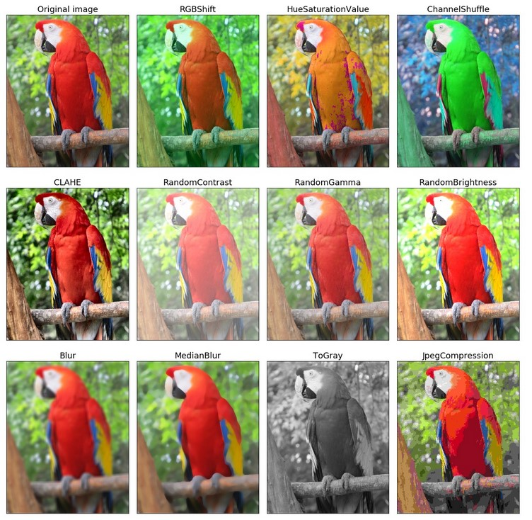Albumentations
Data Augmentation: Kornia

Data Augmentation: Example

Data Augmentation: Synthetic Data

4) Regularization
With early stopping, a model is trained and periodically evaluated on a validation set, e.g., after each epoch. Training is stopped if no significant improvement is achieved after x evaluation cycles.
Early Stopping
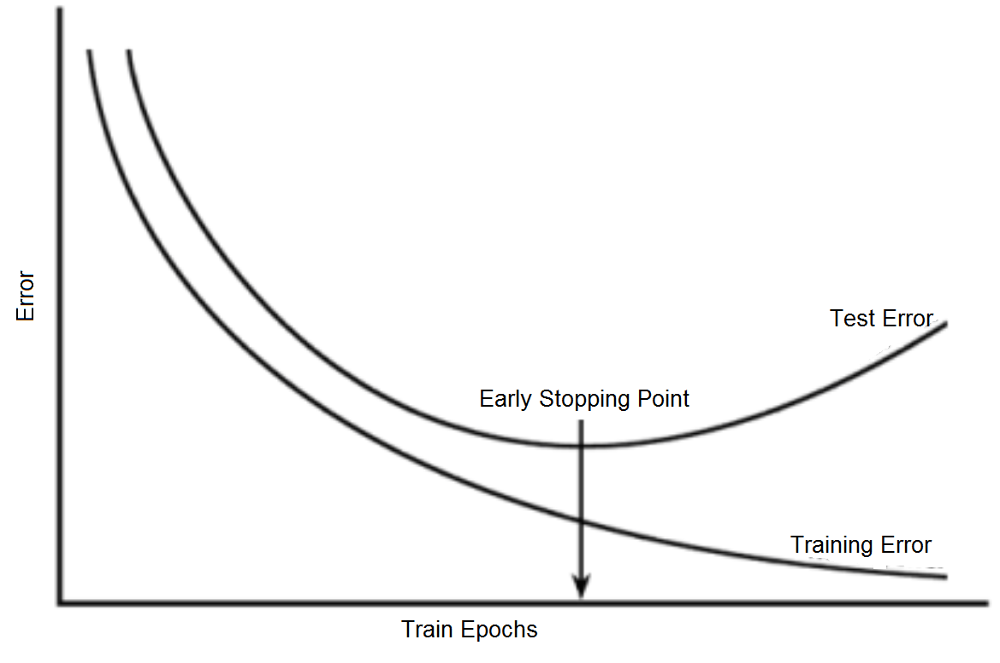
4) Regularization
Early stopping in PyTorch.
4) Regularization
With weight decay, a model can be regularized. The update step in gradient descent is modified.
\[\begin{equation} \theta_{t+1} = \theta_t (1 - \lambda) - \eta \nabla J(\theta) \end{equation}\]
Where \(t\) is the iteration, \(\theta\) the model parameters, \(\eta\) the learning rate, and \(\lambda\) the decay parameter.
4) Regularization
Transfer learning involves adapting a pre-trained model on a large dataset (e.g., ImageNet) to a new task. The last layer is removed and replaced according to the new task. The network is then further trained. Layers can be frozen (weights not updated) or fine-tuned (weights further trained).
Transfer Learning

4) Regularization
In PyTorch, you can freeze the parameters:
5 - Tuning
5) Hyper-Parameter Tuning
In this step, different hyperparameters and architectures are systematically evaluated. Techniques such as grid search or random search can be used, with random search being preferred.
5) Hyper-Parameter Tuning
Parameterized architecture:
class Net(nn.Module):
def __init__(self, l1=120, l2=84):
super(Net, self).__init__()
self.conv1 = nn.Conv2d(3, 6, 5)
self.pool = nn.MaxPool2d(2, 2)
self.conv2 = nn.Conv2d(6, 16, 5)
self.fc1 = nn.Linear(16 * 5 * 5, l1)
self.fc2 = nn.Linear(l1, l2)
self.fc3 = nn.Linear(l2, 10)
def forward(self, x):
x = self.pool(F.relu(self.conv1(x)))
x = self.pool(F.relu(self.conv2(x)))
x = x.view(-1, 16 * 5 * 5)
x = F.relu(self.fc1(x))
x = F.relu(self.fc2(x))
x = self.fc3(x)
return x6 - Squeeze
6) Squeeze out the Juice
After finding the best architectures and hyperparameters, there are further ways to squeeze out more performance.
6) Squeeze out the Juice
Model ensembling.
6) Squeeze out the Juice
Train longer.
Double Descent
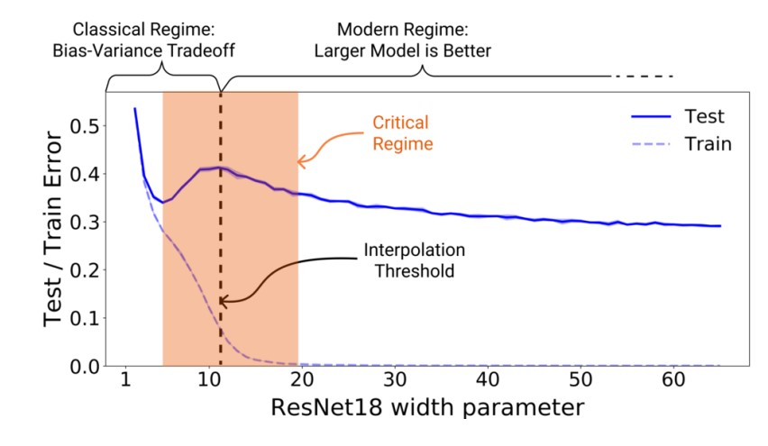Source: Nakkiran et al. (2019)
6) Squeeze out the Juice
Other training techniques:
- Special optimizer (AdamW)
- Complex data augmentation techniques (Mixup, Cutmix, RandAugment)
- Regularization techniques (Stochastic Depth)
- Label smoothing